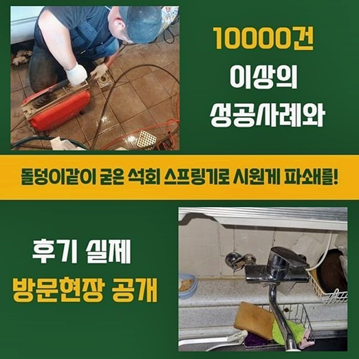
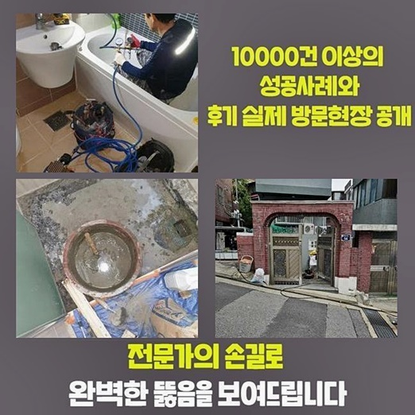
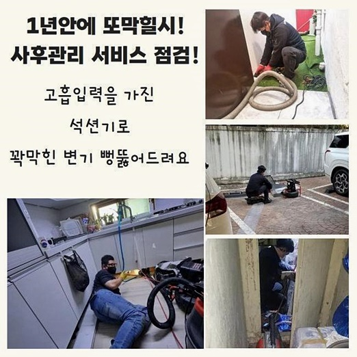
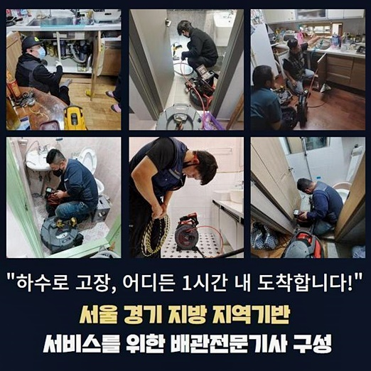
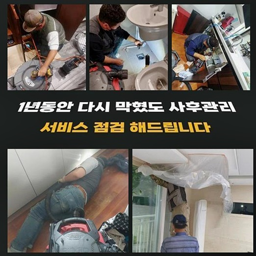
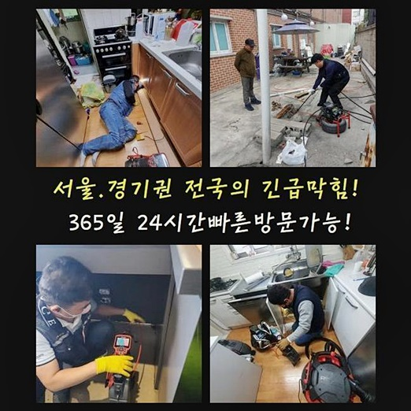

🏠 서초구 원지동씽크대뚫음 반포본동 악취차단 배관뚫는업체
용인 지동 싱크대막힘 전문 시공 후기

📋 작업 개요
- 위치: 용인 지동, 지동, 용인
- 서비스 유형: 싱크대막힘, 하수구막힘, 배관막힘, 역류해결, 뚫는업체, 배관청소, 고압세척, 악취차단
- 작업 일시: 2024. 8. 13. 22:03
- 업체명: 하수구수사대 (010-5615-2118)
🔍 문제 상황
서초구 원지동씽크대뚫음 반포본동 악취차단 배관뚫는업체
안락한 가정일지라도 가끔 발발하는 피해들이 있답니다
그것들 중 이러한 피해는 물빠짐이 이뤄지지않는것이죠
배관에 문제가 생겼을땐 온통 악취들로 꽉 차며 안락해야될 공간들이 갑자기 보건적이지 못한 환경들로 바뀌어요
결함이 생긴바람에 물들이 안빠지고 고착물이 역류하게되는 상황들이 벌어질 시 위생적으로도 좋지않은 조속히 악화될 수 밖에 없죠
해당 문제가 발발했을 경우 오차없이 시정해낼 수 있는 대응책들을 함께 찾는것이 배수장애를 시정해주는 전문진의 우선적인 과제인데요
금일에는 방문드린 곳에서 진행되어진 속시원했던 과정들을 자세하게 안내할텐데요
의뢰인분께선 다용도공간에 자리하고있는 세탁배관으로 하수들이 내려갈 기미를 보이지않는다고 저희업체에게 연락하셨어요
배수관 수리를 바로잡는 저희들은 우선 필요 장비들인 샤프트장치 석션기기 내시경카메라를 구비하여 불러주신 곳으로 찾아뵈었어요
도착해서 냄새와 더불어 이물들이 역류하게되는 것을 목격할 수 있었죠
그리하여 오수들을 모으고 통수들을 도전해봤죠
이 단계에서 흔히 있는 세제 오염물이 아닌, 배수관에 잔존하던 오염원이 역류하게 되며 냄새들을 생겨나게했어요

🔎 원인 분석
💡 전문가 진단: 정밀 진단 장비를 사용하여 슬러지의 고착 여부를 판명하고 타격/세척 작업을 실시했습니다.
가끔씩 싱크대라인과 베란다부분의 라인들이 연결되어진 구조가 있어서 두개의 라인이 이어진지 확인해보는 점검과정을 이행해요
지금부턴 이물들을 찾아나서기위하여 고객에게 앞서서 막히게되어버리거나 솟구치는 증상이 목격된 경험이 있나 여쭈었어요
고객분은 앞서서 배수구쪽을 청소할 목적으로 집에 있던 세제성분과 발포용품을 사용했다 얘기하셨는데요
그래서 싱크대부분과 접촉된 관로가 연유로 작용했을거란 여지가 농후해보였습니다
저희전문진이 방문했던 곳의 오류지점을 고쳐낼 생각을 하여 그 기조들을 명확하게 알아야하죠
그렇기에 내시경도구를 사용한 뒤 결함이 생긴 배수구를 들여다보기위하여 준비까지 마쳤죠
심층부까지 명확하게 안보이면 석션장치를 이용해서 배출되지못한 오수들을 배출시켜줍니다
석션기기를 가용하여 우선적인 수리를 실시해주었어요
빨아당길때 찌꺼기와 오염물이 빠져나왔지만 명확한 까닭은 확실치 않았어요
사용했던 석션기기 사용으로는 완전한 해결에 닿을 수 없는 사례가 있기에 즉시 내시경장치로 시야확보된 관로를 체크해야해요
잔해를 세세하게 보니 섬유조각과 유사한 오염물이였어요
구조로 미루어볼때 베란다쪽에서 흘러나온 옷에서 나오게 된 이물일 가능성들이 농후했습니다

🔧 작업 과정
우선적으로 해당 잔해를 제거시키고 이젠 심부까지 이물제거에 심혈을 기울였습니다
이럴땐 깊숙한 지점의 문제를 해결해주기 위하여 빈틈없는 제거를 수행할때 없어선 안될 노하우와 기기들을 준비합니다
내시경카메라를 이용하는 연유는 깊은부분의 문제를 세심히 살피고 제대로 된 시정을 도와주기때문에 그렇죠
석션기기로 1차 청소과정을 이행하고서 헤드부에 달린 렌즈부분으로 군데군데 상세히 보았죠
벽측까지 점검하면서 문제들이 모여있던 부위를 확인했어요
이것과같이 막히는 문제들은 예기치못하게 야기되고 바로 잡는것또한 어렵죠
반대로 전문적 접근과 노하우들을 겸비한 배관해결사의 실력들로 피해를 안정적으로 완화시키는것이 가능하죠
막힘자체의 연유와 부위를 파악해보기위하여 내시경을 안쪽으로 투입시켰어요
배출되는 수도는 얽히고 섥힌 배수관으로 흐르는데 하수도는 짧기도 하나 수십미터까지 설치되어 있을수도 있는데요
그리하여 눈으로는 알지못하는 배관 관로를 내시경기기로 구석까지 들여다보았는데요
깊은곳까지의 상태를 보니 벽측에는 이물과 작은 이물이 안쪽에서 뒤엉킨 상황이였는데요
위와같은 잔해물의 경우엔 녹아내리지를 못하여 신속히 고착해버리는 바람에 딱딱하게 굳을수 있어요
상황을 보고 운용하는 장치가 다른데 혹여 이물의 사이즈가 크다면 갈고리부분의 도구로 빼내준 뒤 석션으로 청소시켜요
심한 상황이면 이물이 슬러지모양으로 깊은곳까지 뭉친상태라면 이것들을 조각내는 샤프트도구가 필요할텐데요
오염물과 함께 영키게되면서 굳게된 이물과 점성이 가득한 개체를 샤프트기기로 제거하며 뚫어내었는데요
샤프트는 배관쪽에서 원운동을 하게되며 잔재를 잘게 탈락시키는 기능들을 담당하고있습니다
저희의 전문가들이 내방드렸던 현장에서의 모든 이물이 청소되고 내시경 내시경장치로 재차 검사들을 진행시켜서 스케일링들의 결과들을 확인해보고 물이 잘 내려가는지 확인하는 검열과정도 수행했는데요
그 다음으로 증상의 원인이 될 수 있는 잔여 이물들이 남아있지않게 석션장비로 빨아당기며 세심히 청소시켜 마무리지었습니다
막히는 증세를 방지하고자 하면 꾸준한 점검을 이해하는것과 청소작업을 이어가야해요
싱크대부분과 접촉된 하수라인에서 음식잔해가 중간에서 고착되어 역류하게되는 경우도 자주 보여요


✅ 작업 완료
배수장애가 발발한 경우라면 침착함을 유지하시고 저희전문진에게 문의하세요!
저희의 세척과정은 간소한 과정뿐만 아니라 고객님댁의 보건적 상황을 향상시키는 절차라 할 수 있습니다
저희전문진은 막힘을 제대로 해결해주고 안정적인 물사용을 유지할 수 있게끔 도와드리겠습니다
또한 유사한 상황에 놓였을때 조속히 저희업체에게 전화주세요
저희업체의 경우엔 의뢰자의 물사용을 지켜내는데에 심혈을 기울입니다



⚠️ 주방 싱크대 배관 막힘 예방 수칙
- ✅ 기름기가 묻은 식기나 프라이팬은 설거지 전 키친타올로 반드시 기름때를 닦아내세요.
- ✅ 주기적으로 싱크대 개수대에 뜨거운 물을 가득 받아 한 번에 내려 배관 내부 기름을 씻어내세요.
- ✅ 배수구 거름망을 미세한 필터로 사용하시고 음식물 찌꺼기가 틈으로 새어 들지 않게 관리하세요.
- ✅ 베이킹소다와 식초를 뜨거운 물과 함께 일주일에 한 번씩 부어주면 배관 살균과 막힘 예방에 좋습니다.
💡 핵심 정리
- 확실한 장비 작업(내시경 점검 및 샤프트 스케일링)으로 원인을 뿌리 뽑습니다.
- 작업 후 1년 이내에 동일한 부위 재발 시 100% 무상 A/S 서비스를 보장합니다.
- 서울 · 경기 · 인천 전 지역에 24시간 언제든 긴급 출동할 수 있도록 항시 대기 중입니다.
❓ 자주 묻는 질문 (FAQ)
🚨 용인 지동 싱크대막힘 문제로 고민이신가요?
정확한 원인 진단과 확실한 시공으로 재발 없는 해결을 약속드립니다.
24시간 긴급 출동 | 서울 · 경기 · 인천 전지역 | 1년 내 재발 시 무상 A/S